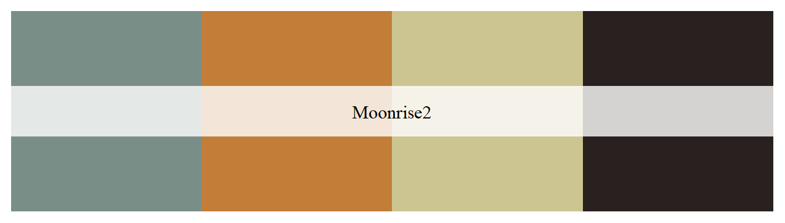
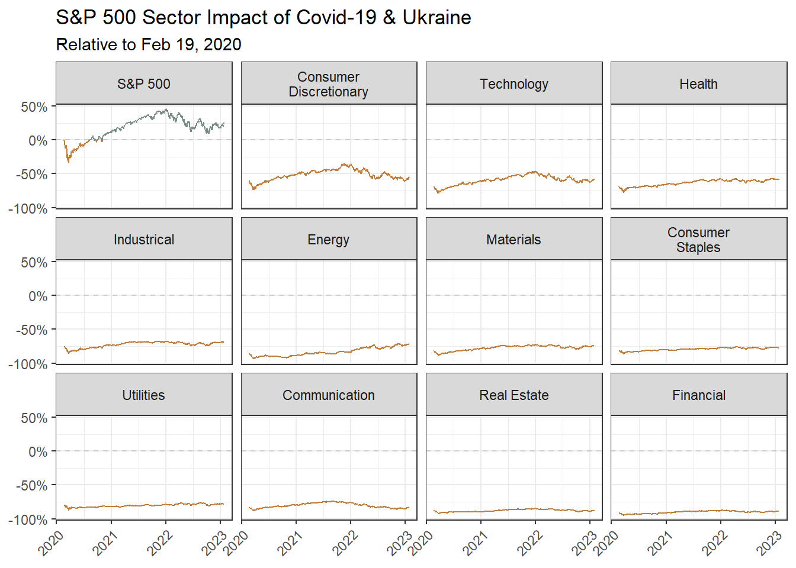

library(tidyverse)
library(wesanderson)
library(scales, exclude = "date_format")
library(glue)
library(tidyquant)
library(clock)Weathering the Storm
R
quant
Timeseries comparison and the impact of Covid-19 on the financial markets by sector

In 2020, Covid-19 began battering financial markets now further impacted by the war in Ukraine. Which sectors are faring best?
I’ll compare each sector in the S&P 500 with the overall market. Baselining each at zero as of February 19th, we’ll see which were the first to recover lost ground.
theme_set(theme_bw())
(cols <- wes_palette("Moonrise2"))
symbols <-
c(
"SPY",
"XLV",
"XLK",
"XLE",
"XLF",
"XLC",
"XLI",
"XLY",
"XLP",
"XLRE",
"XLU",
"XLB"
)
from <- "2020-02-19"
from_formatted <- date_parse(from, format = "%Y-%m-%d") |>
date_format(format = "%b %d, %Y")eod_sectors <-
tq_get(symbols, from = from) |>
mutate(
norm_close = adjusted / first(adjusted) - 1,
type = if_else(symbol == "SPY", "Market", "Sector"),
sector = case_when(
symbol == "SPY" ~ "S&P 500",
symbol == "XLB" ~ "Materials",
symbol == "XLE" ~ "Energy",
symbol == "XLU" ~ "Utilities",
symbol == "XLI" ~ "Industrical",
symbol == "XLRE" ~ "Real Estate",
symbol == "XLV" ~ "Health",
symbol == "XLK" ~ "Technology",
symbol == "XLF" ~ "Financial",
symbol == "XLC" ~ "Communication",
symbol == "XLY" ~ "Consumer Discretionary",
symbol == "XLP" ~ "Consumer Staples",
TRUE ~ "Other"
), .by = symbol
) |>
drop_na()Perhaps not too surprising to see that Tech led the way back from Covid. But with the further impact of the situation in Ukraine, the Energy sector is now the strongest performer relative to February 2020. Comms, with all that home-working, benefited initially during the lockdown, but has faded since.
eod_sectors |>
mutate(
sector = str_wrap(sector, 12),
sector = fct_reorder(sector, norm_close, last, .desc = TRUE)
) |>
ggplot(aes(date, norm_close, colour = sign(norm_close))) +
geom_hline(yintercept = 0, linetype = "dashed", colour = "grey80") +
geom_line() +
facet_wrap(~sector) +
scale_colour_gradient(low = cols[2], high = cols[1]) +
scale_y_continuous(labels = label_percent()) +
labs(
title = "S&P 500 Sector Impact of Covid-19 & Ukraine",
subtitle = glue("Relative to {from_formatted}"),
x = NULL, y = NULL, colour = NULL
) +
theme(axis.text.x = element_text(angle = 45, hjust = 1),
legend.position = "none")